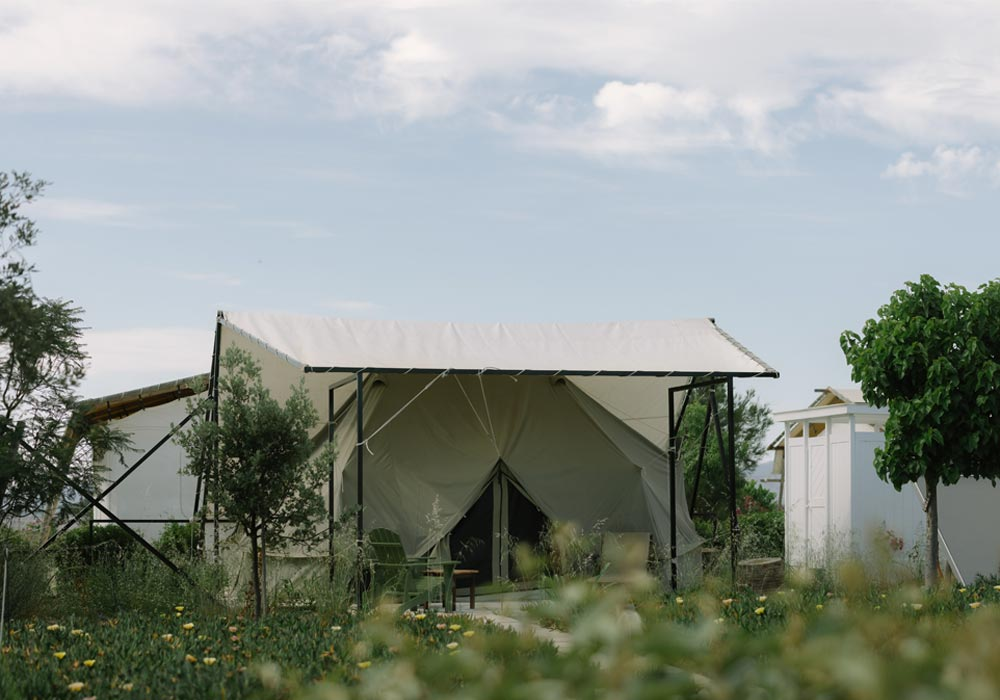
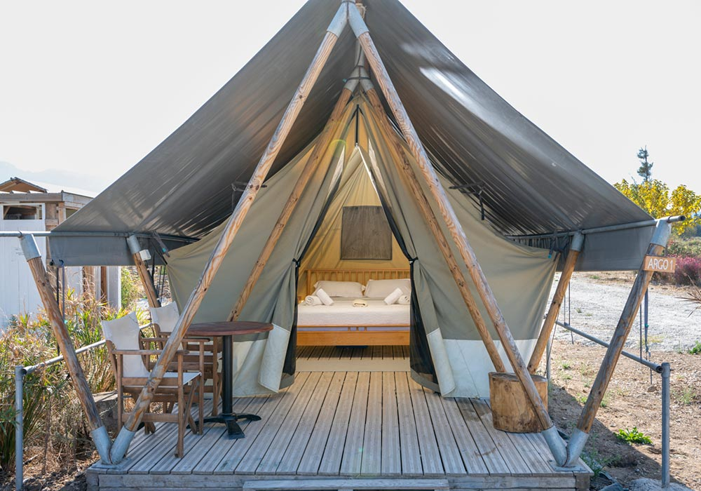
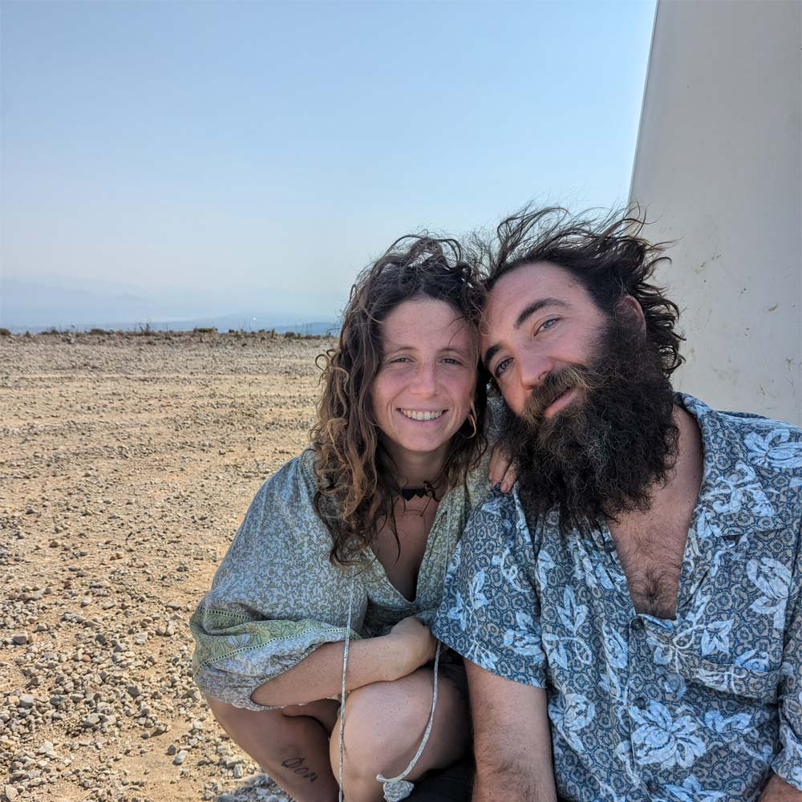

Spacious upscale tents, warm personal hospitality, quality wholesome food and charming outdoor areas — a short stroll from the sandy beaches of Marmari.
Welcome to Sails on Kos, where glamping meets Greek island charm. Our family-run glampsite offers a fresh take on holiday making: spacious upscale tents, warm and personal hospitality, quality wholesome food and charming outdoor areas, all nestled on quiet farmland a short stroll from the sandy beaches of Marmari.
Born from a love of nature and hospitality, we have crafted a four-star escape that is perfect for couples, families and adventurers seeking something extraordinary.
Family-run Eco-luxury Four stars

Five kinds of tent, from the Argo for two to the Villa for the whole family. Every one with real beds, real bathrooms and the sea a few minutes away on foot.

The couples' escape: one room, indoor and outdoor living, private bathroom pod.
See this tent

The real explorer's option, named after the boat of Jason and the Argonauts.
See this tent
With sweeping views of the mountain, surrounded by Greek farmland, from breakfast through to a late-night snack: hand-made, locally sourced and creative dishes — a charming mix of tradition and modern flair at Sails on Kos Taverna.
| Breakfast | 07:30 – 10:00 |
| Bar | 10:00 – 23:00 |
| Restaurant | 12:30 – 16:00 & 18:30 – 22:00 |

Open-air cinema with Greek films, mosaic workshops, cooking classes, jewellery making, camp games and more — a fresh programme every week.
See the programme
A shaded children's corner with games, books and toys, plus a playground where the little ones can let loose while you enjoy a cocktail in peace.
For families
Sunset horseback riding, mountain hiking, water sports and traditional bread-making — with massage and private yoga back at the resort.
Explore KosSmall destination weddings, retreats and special events amid idyllic farmland, with views of Mount Dikeos. Book the whole resort for exclusive use of its twenty luxury tents, spacious communal areas and the pool — and let the on-site restaurant tailor every detail.
Catering packages: BBQ, Traditional Wedding and Greek Banquette.

Sails on Kos is an absolute gem for anyone looking for a unique and relaxing glamping experience. Everything was seamless — we even arranged an airport transfer with them. The staff are incredibly welcoming and go out of their way to make your stay special.Andi S
We stayed in this magnificent oasis of peace for a week and never wanted to leave. Our glamping tent was spacious and clean, the staff fantastic, the swimming pool splendid, the restaurant excellent, the outdoor cinema top. The food in the Taverna is exquisite — the breakfasts fantastic.Virginia R
The unique concept, where the tents are extremely comfortable yet provide all the amenities of a typical hotel room. The grounds are very well maintained, the nearby beach is beautiful, and there is a lovely town within walking distance with shops and a supermarket.Kunter A
A guest guide the resort can hand over with the booking: breakfast times, opening hours, the pool, the beach, activities, the island around. And behind it, a small private page for each booking — with the guest's own tent, dates and questions, and a direct line to the front desk instead of a phone call.